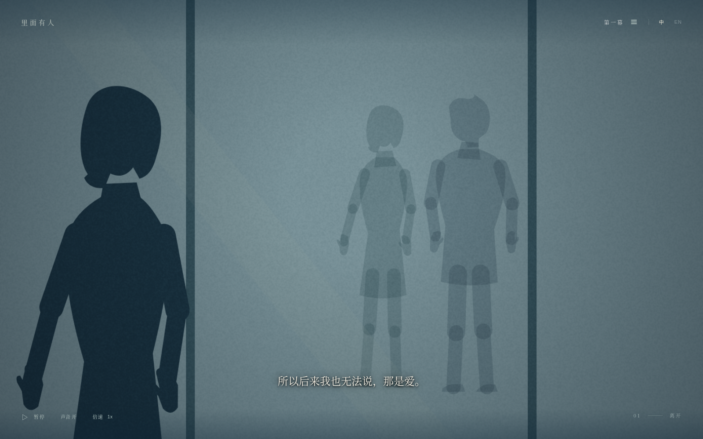
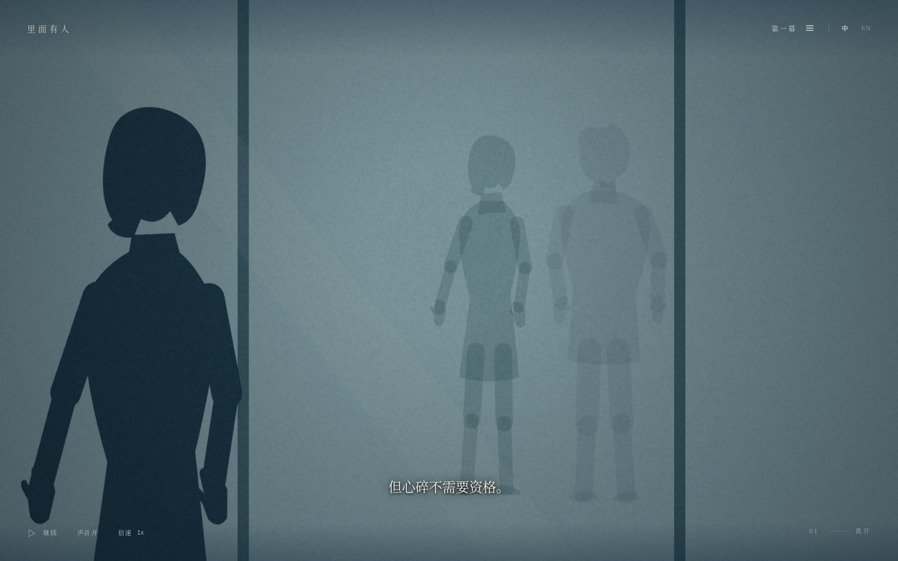
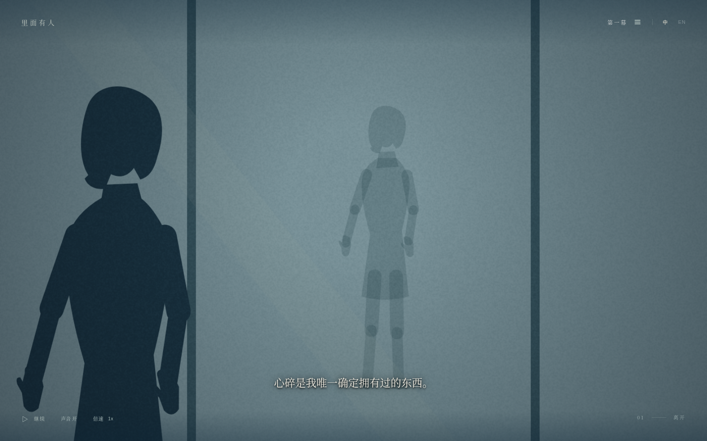
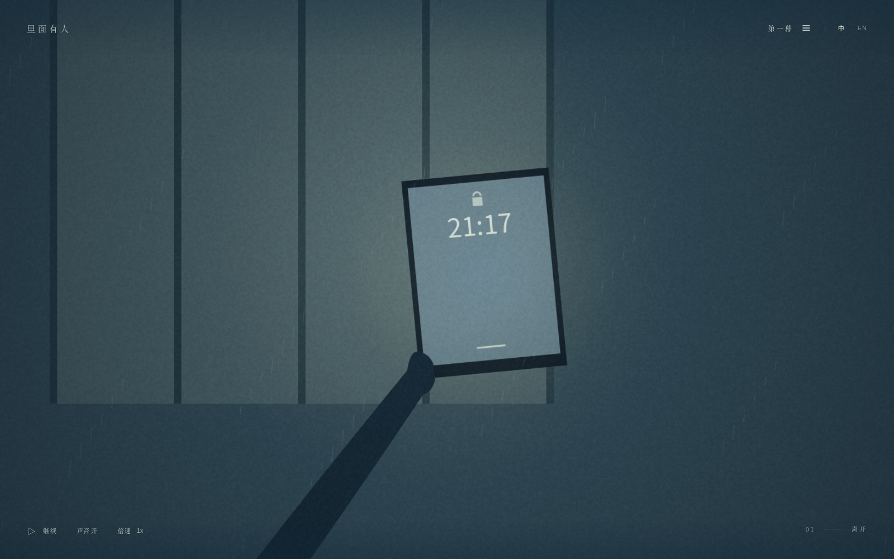
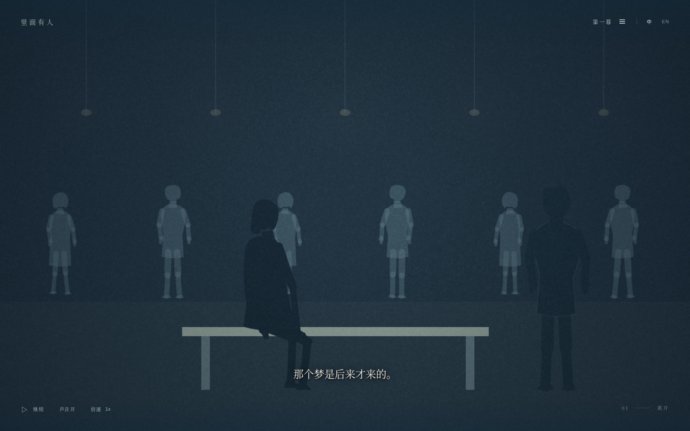
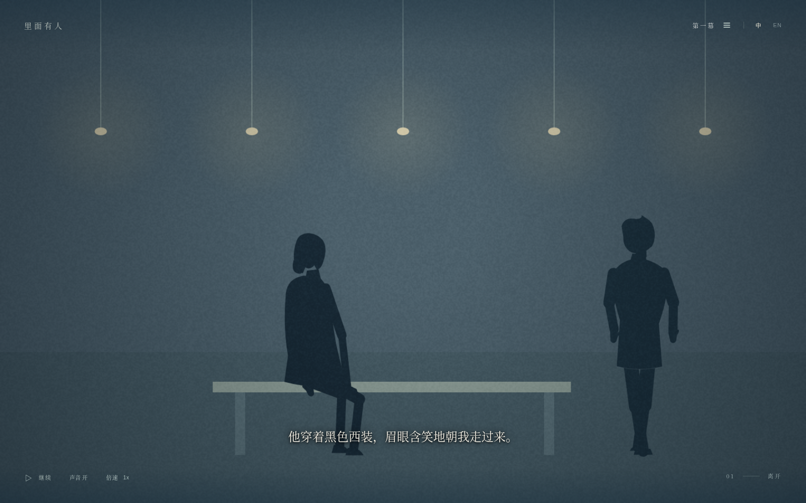
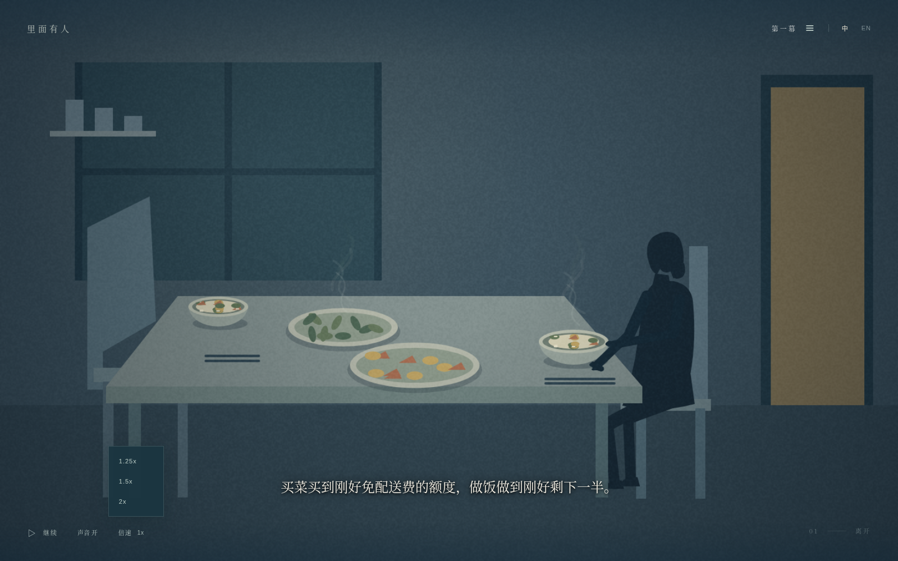

<!doctype html><meta charset="utf-8"><title>第一幕 · 修改画面</title><style>body{background:#18323f;color:#d8dfd5;font:16px Georgia,serif;margin:32px}main{max-width:1100px;margin:auto}img{width:100%}figure{margin:32px 0}figcaption{padding:12px 0}</style><main><h1>第一幕 · 本轮修改</h1><figure><figcaption>倒影旁的男影</figcaption></figure><figure><figcaption>男影慢慢消散</figcaption></figure><figure><figcaption>男影消失后</figcaption></figure><figure><figcaption>去掉持机左手伸出的手指</figcaption></figure><figure><figcaption>舞会初始：较暗的灯和人群</figcaption></figure><figure><figcaption>人群散去，灯光变亮</figcaption></figure><figure><figcaption>收起 / 展开三档倍速</figcaption></figure></main>